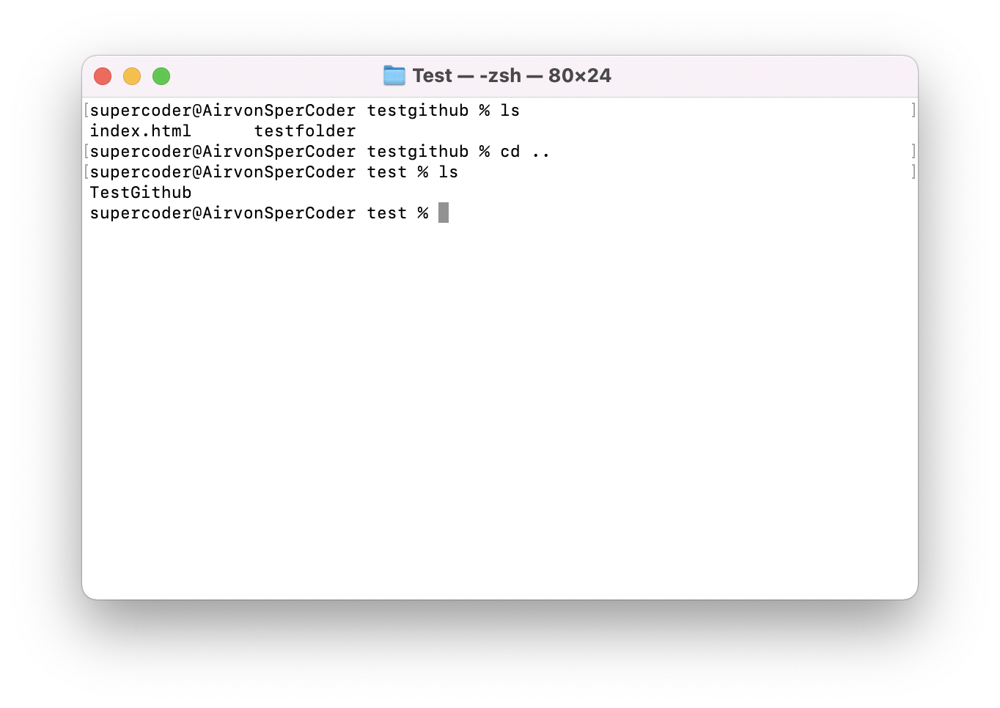

Mac: Terminal-Befehle für einfacheres Arbeiten
Was ist Terminal?
Ein Terminal ist textbasiert und dient als Befehlzeilenschnittstelle (Command Line Interface = CLI), in die
Ihr Eure Befehle eingeben könnt. Eine Shell nimmt diese Befehle entgegen und weist das Betriebssystem an,
sie auszuführen.
- Terminal app via "Launchpad" öffnen

- pwd - Print Working Directory
- ls - List
-
ls -1 - List in eine Spalte

- clear
- ls -a - List mit versteckten Datein

- cd - Change directory
- mkdir (foldername)- Make directory
- cd .. - Change directory zurück

- touch - Eine Datei erstellen
- mv "file" "new place" - Datei verschieben

- cp "file" "new file" / cp -r file newFile - Datei kopieren
- cd~ - Zurück zum User-Ordner mit Tilde (Alt N)
- dig - abfrage des Domain Name Sytem
- exist - Das aktuelle Terminal beenden/verlassen.
- Ctrl + U: Löscht die Linie vom Cursorpunkt zurück zum Anfang.
- Ctrl + A: Bewegt den Cursor an den Anfrang der Zeile.
- Ctrl + E: Bewegt den Cursor an das Ende der Zeile.
- Pfeiltaste hoch/runter: Ermöglicht es Ihnen, die vorherigen Befehle zu durchsuchen.